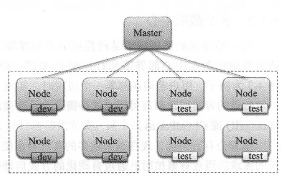
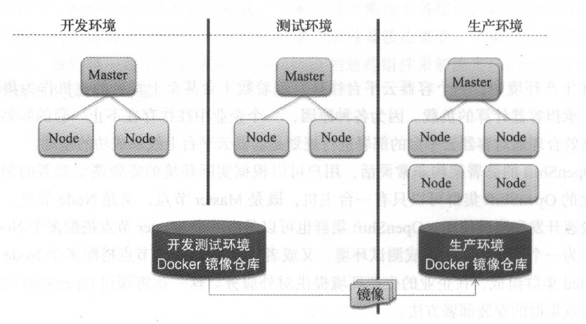
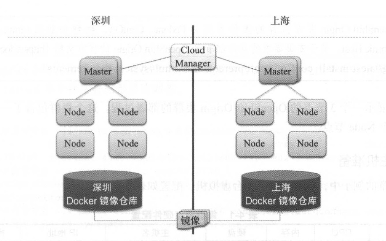
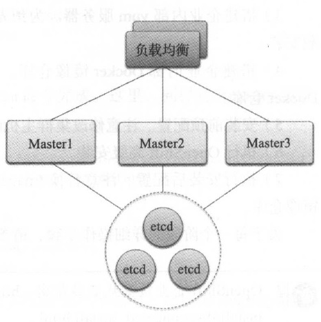

4. OpenShift 企业部署¶
在生产环境中， 一个容器云平台往往管理着数十台甚至上百台的主机作为集群的计算资源，承担容器计算的负载。因为各种原因，一个企业中往往存在不止一套的容器云集群实例。高效合理地对容器云平台的部署进行规划是容器云平台上线和成功的基础。
OpenShift的部署架构非常灵活，用户可以根据实际环境的需要调整部署的架构。一个最小化的OpenShift 集群可以只有一台主机，既是Master 节点，又是Node 节点。这种集群适合快速开发和测试使用。OpenShift的集群也可以是由一个Master 节点搭配多个Node 节点组成，作为一个开发团队的集成测试环境。又或者由多个Master 节点搭配多个Node 节点和外部的etcd 集群组成，在企业的生产环境提供对外服务。这一章将探讨OpenShift 的部署架构及多节点集群的安装部署方法。
4.1. 部署架构¶
4.1.1. 多环境单集群¶
多环境单集群的结构示意图如图4-1所示。企业内的不同开发和测试环境的主机都在一个数据中心，它们组成一个OpenShift的集群。通过标签，我们将不同的计算节点进行分区和分组。部署应用时，通过标签选择器部署到目标环境中。这种部署方式的优点是简单高效，但是缺点是隔离性低，各个环境的应用存在相互影响的可能。这种部署方式适合开发和测试环境使用。
图4-1 多环境单集群
4.1.2. 多环境多集群¶
多集群的需求往往来源于两个方面， 一是因为安全或管理的原因，企业内部往往需要在不同的环境或者为不同的团队部署不同的集群。二是企业内部对资源需求的不断增长，一个集群难以提供足够的计算能力。 图4-2 为企业内一个典型的场景。开发、测试和生产分别有自己的环境，且这些环境相互隔离。集群之间互不通信，唯一的联系是开发测试镜像仓库中特定的镜像通过人工或自动的方式同步到生产环境中的镜像仓库。生产环境的OpenShift 集群会从生产仓库中下载镜像进行部署。这种场景的多集群管理比较简单，每个环境的集群不相互影响，保证了生产环境的安全稳定。
图4-2 企业内多个环境中的集群
4.1.3. 多个数据中心¶
另一种场景的部署需求是跨数据中心的部署，如图4-3 所示。用户希望能在两个同城或者异地的数据中心部署多套OpenShift集群，而且在一个统一的入口管理多个集群。以图4-3 为例子，用户希望在部署一个应用时，实现一次部署就可以在多个数据中心同时部署一定数量的容器以达到高可用。这种需求往往需要结合第三方的混合云管理工具来实现，如Manage IQ 或CloudForms 。
随着公有云兴起，现在越来越多的客户考虑使用公有云的资源来满足对计算能力快速增长的需求。当业务繁忙时，通过自动化的方式启动公有云上的实例提供服务。这种方式和多数据中心的部署方案从本质上来说是一致的。
图4-3 多个数据中心的集群
在讨论多数据中心部署时经常碰见的疑问是“多个数据中心能不能部署成一套大的集群”。在理论上是可行的，但是现实中往往无法保证数据中心之间网络的质量。因为网络的抖动和异常会极大影响集群的稳定性，所以要慎重考虑跨越数据中心的集群部署。
4.2. 高级安装模式¶
（略）
4.3. 集群高可用¶
为了防止单点失效，在实际的生产部署中必须考虑集群的高可用。OpenShift 集群的高可用需要从四个方面考虑，下面将分别展开叙述。
4.3.1. 主控节点的高可用¶
OpenShift集群中的节点分为主控节点（ Master 节点）以及受控节点（ Node 节点）两类。主控节点承担了集群管理的工作，所有的计算节点和部分容器需要访问Master 节点获取集群相关的信息。一旦Master 节点停止了服务， OpenShift集群的功能将受到很大影响。
Note
常见的一个疑问是“如果Master节点停机了， OpenShift 平台上的容器会停止运行吗？”对于一般的容器应用而言， Master 节点的停机不会造成正在运行的容器停止运行。但是由于Master 停机，调度器缺失，所以在Master 节点恢复前都不会再产生新的容器。对于一些依Master 节点的容器而言，由于Master 节点停机导致调用Master 节点上的接口失败，容器是否会停止运行取决于容器内应用的错误处理机制。
OpenShift 默认提供了Master 高可用的方案： Native HA 。在OpenShift 的Native HA 方案下，用户可以同时部署多个Master 节点形成Master 节点的多活集群，如图4-4 所示。由于存在多个Master 节点同时提供服务，在Master 节点集群的前端需要挂载一个负载均衡器作为流量人口。这个负载均衡器可以是Haproxy 、LVS , F5 或者其他云平台提供的高可用负载均衡器。在默认情况下， OpenShift 使用Haproxy 作为负载均衡器。Haproxy 可以配置成集群，防止单点失效。
etcd 是OpenShift 集群底层的数据源。etcd原生就是一个高可用的分布式键值对数据库。在OpenShift 高可用的环境中，用户可以部署一个包含多个etcd 节点的集群， OpenShift可以配置连接到外部的etcd 集群。OpenShift多主集群的安装和部署可以通过Ansible 实现。在Ansible Hosts 文件中定义涉及的主机及角色信息，然后安置自动化安装部署。下面是一个多主集群的Ansible 配置示例。
图4-4 OpenShi白多Master 高可用架构
＃主机组
[OSEv3 :children]
masters
nodes
etcd
＃主机参数
[OSEv3:vars]
ansible_ssh_user=root
deployment_type=origin
# Master 节点主机
[masters]
master.example.com
# etcd 主机
[etcd]
etcdl.example.com
etcd2.example.com
etcd3.example.com
# Node 节点主机
[nodes]
master.example.com openshift_node_labels="{'region':'infra','zone':'default'}"
node1.example.com openshift_node_labels="{'region':'primary','zone':'east'}"
node2.example.com openshift_node_labels="{'region':'primary','zone':'west '}"
4.3.2. 计算节点的高可用¶
我们对计算节点高可用的着眼点更多在于其上运行的容器应用。在OpenShift集群中，计算节点往往存在多个实例。一个计算节点不幸异常停机后，其上的容器将会被逐步迁移到其他节点上，从而保证了高可用。 值得注意的是，可以通过标签的方式来管理计算节点，将不同的计算节点划分为不同的可用区或者组。在部署应用时，可以使用节点选择器将应用部署至带有指定标签的目标计算节点上。在规划计算节点标签时，要尽量保证用于节点选择器的标签组合的目标计算节点数大于1 。这样可以避免一台目标节点停机后，调度器找不到满足节点选择器要求的计算节点进行容器的部署。
4.3.3. 组件的高可用¶
在OpenShift集群中的系统组件如Router 及Registry 的失效也会为系统和应用的运行带来风险。Router 和Registry 是以容器的形式部署在集群中，它们都可以弹性扩展至多个实例。Router 和Registry 容器都有相应的Replication Controller 负责监控容器的状态，当容器实例意外退出后，新的容器实例将被启动。这里需要注意的是，用户要保证Router 和Registry部署定义中的节点选择器能匹配上多个计算节点，以保证高可用。
Router 扩展至多个实例后，由于Router 需要占用主机的物理端口（ 80 、443 及1936 )，所以一台计算节点上只能部署一个Router 容器。当Router 实现了多实例后， Router 前端需要挂接上负载均衡器作为流量入口。
在生产中， Registry 底层将挂载持久化存储。在储存类型的选择上要保证所选择的储存类型可以被多个节点挂载。这样即使Registry 容器漂移到其他计算节点上，持久化储存也能被正确对接到容器中。
4.3.4. 应用的高可用¶
要实现应用的高可用，可以在应用层面应用自身实现高可用的机制，也可以依赖于OpenShift平台的弹性扩张、自恢复、Service 及Router 的负载均衡来实现。应用自身实现的高可用机制类型很多，这里聚焦在OpenShi位提供的功能如何实现应用的高可用。
应用在OpenShift 集群内通过弹性扩展的机制实现多实例的部署。Replication Controller负责监控容器状态。当容器应用异常退出时， Replication Controller 负责启动新的应用容器填补空缺。多个容器实例前端可以定义Service, Service 为集群内的访问提供了负载均衡。对于集群外的访问，由Router 提供负载均衡。Router 和Service 将会根据后端容器的情况实时调整负载均衡规则，保证用户请求转发到状态正常的容器进行处理。在利用OpenShift 的容器调度实现应用高可用时，要注意提供满足调度规则的计算节点的数量是否存在冗余。
4.4. 本章小结¶
本章介绍了OpenShift 的集群部署架构及高级安装模式，并通过高级安装模式部署了一个3 节点的OpenShi位集群。以此为基础，可以创建更复杂的集群部署架构。本章还探讨了OpenShift 集群高可用相关的话题。掌握这些内容，将使你在为企业规划OpenShift 集群部署时更加自信。